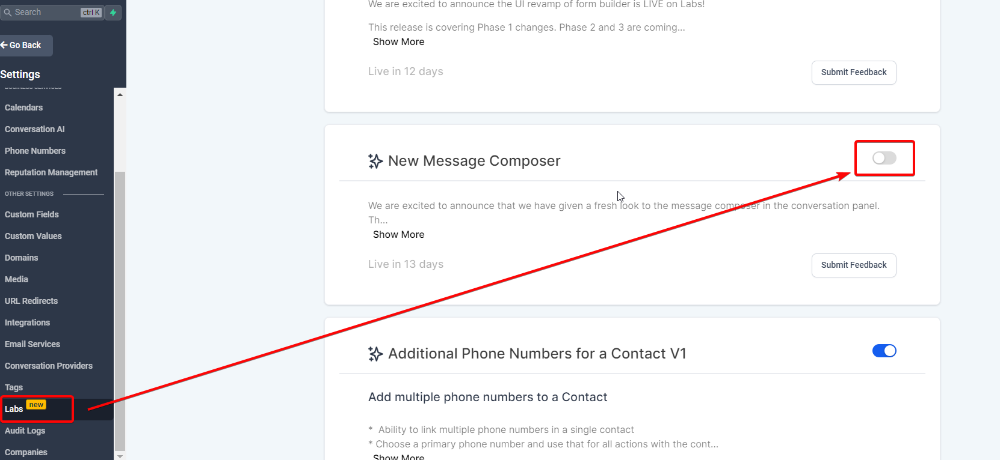
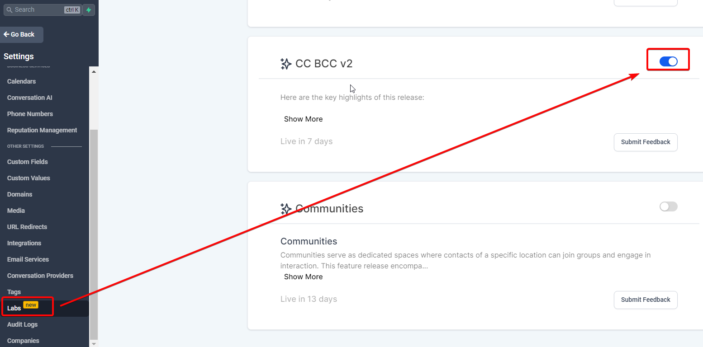
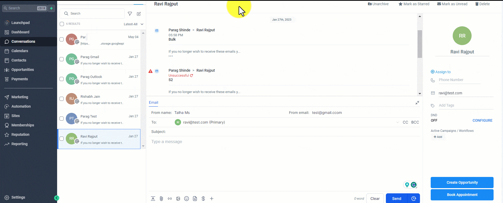
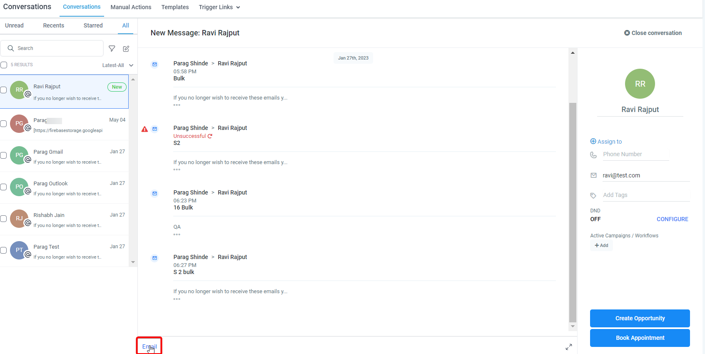
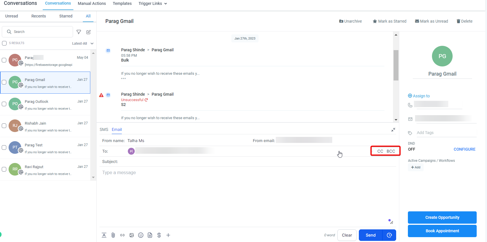
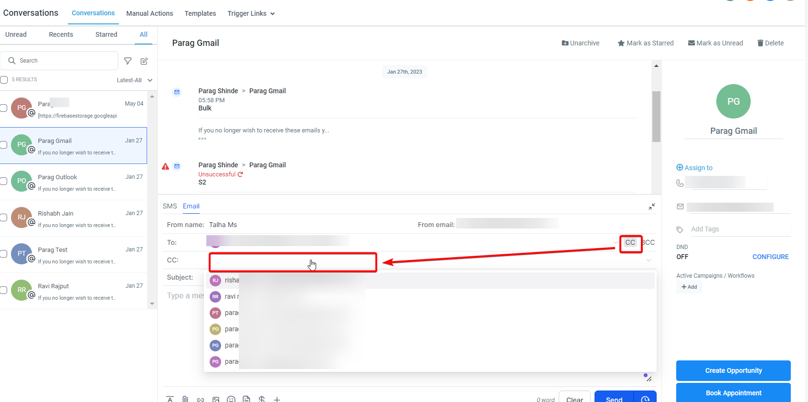
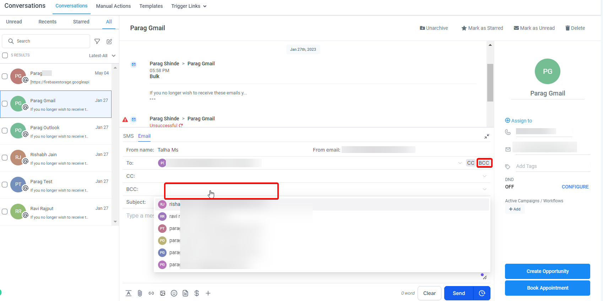

Our email composer is equipped with the functionality of CC and BCC capabilities, providing a robust emailing experience. This feature allows users to effectively manage their communication by engaging multiple stakeholders in a single thread while preserving individual confidentiality. As an integral part of our user-friendly solutions, this feature continues to redefine user control in communication, in alignment with our commitment to offering feature-rich email experiences.
Please note:
This feature is available only in the New Message Composer and can be accessed via Labs.

Covered in this Article
What is the CC and BCC capability in the Email Composer?
Usage Cases:
How to use the CC and BCC feature?
FAQs
Q: Will a new contact be created if I add an outside email to the CC/BCC fields?
Q: What happens if I add an existing contact’s email address in the CC/BCC fields?
Q: Is the CC/BCC feature available for all email channels?
Q: How can the CC/BCC feature improve my email communications?
What is the CC and BCC capability in the Email Composer?
The CC (Carbon Copy) and BCC (Blind Carbon Copy) capabilities in the Email Composer enable you to send emails to additional recipients.
The CC function allows you to email additional recipients beyond the primary ones in the 'To' field. When you use the CC function, the email addresses of all recipients (primary and CC'd) are visible to all who receive the message.
On the other hand, the BCC function also allows you to send emails to additional recipients, but in a more private manner. When you use the BCC function, the email addresses of the BCC'd recipients are hidden from all other recipients. This means that people who receive the email will not know that the BCC'd recipients are also receiving it, thus ensuring their privacy.
Usage Cases:
Project Updates: If a team is working on a project and the project manager wants to send an update to the team members and keep higher management or other departments in the loop, they can use the CC function. The team members would be in the 'To' field, and the higher management or other departments would be in the 'CC' field. This ensures that everyone has the same information about the project's progress.
Customer Communication: In customer service situations, the support representative might be communicating directly with a customer (the 'To' field), but they might also CC their manager or another team (like the technical team) if they want to keep them informed or require their input on the conversation.
Confidential Matters: If a manager wants to email a staff member but also wants to inform the HR department without the staff member knowing, they could use BCC. The staff member's email would be in the 'To' field, and the HR department would be in the 'BCC' field. This way, the HR department stays informed about the communication without the staff member knowing.
Mass Email without Revealing Addresses: If a company wants to send out an announcement or newsletter to multiple recipients without each recipient seeing the others' email addresses (for privacy reasons), they could use the BCC field. This way, each recipient receives the email without seeing who else the email was sent to.
Vendor Communication: If a business communicates with various vendors or suppliers and needs to send a similar message to all, they can put the primary vendor in the 'To' field and CC the rest. This way, all vendors know about each other, promoting transparency, but the main communication is addressed to the primary vendor.
How to use the CC and BCC feature?


Accessing the Feature: Open the email composer by clicking the "New Email" button or "Reply" in an existing email thread.
Locating the Fields: You will see the CC and BCC fields alongside the regular "To" field. They are easily accessible and integrated seamlessly within the composer interface.

Adding Recipients: Click on the CC/BCC field to expand it. You can now enter the recipients' email addresses you wish to CC or BCC. You can select an email address from the dropdown list (which contains all your contact emails) or manually type in a new email address.


Collapsing the Fields: After adding the recipients, click on the CC/BCC field again to collapse it. The added recipients will be saved.
Syncing Changes: The new feature also supports 2-way sync. Any changes to the email recipients (added or removed) in our system will be reflected in Gmail/Outlook and vice versa.
Replying to Emails: You can only do a "reply all" to any email with CC or BCC recipients. It's important to note that you cannot remove CC/BCC recipients in the middle of a thread.
FAQs
Q: Will a new contact be created if I add an outside email to the CC/BCC fields?
A: No, a new contact will not be created if you add an outside email to the CC/BCC fields.
Q: What happens if I add an existing contact’s email address in the CC/BCC fields?
A: If you add an existing contact’s email address in the CC/BCC fields, the conversation will only show under the primary contact’s thread (the 'To' recipient) and not under the thread of the CC/BCC contact.
Q: Is the CC/BCC feature available for all email channels?
A: Yes, the CC/BCC feature is compatible with all email channels, including Mailgun, Leadconnector (2 Way Sync) - Gmail and Outlook, SMTP email, Custom Providers, and Custom Conversations Providers.
Q: How can the CC/BCC feature improve my email communications?
A: Using the CC/BCC feature, you can efficiently manage your email communications by involving multiple parties, either openly or confidentially. This offers flexibility and enhances communication by keeping all relevant parties in the loop.